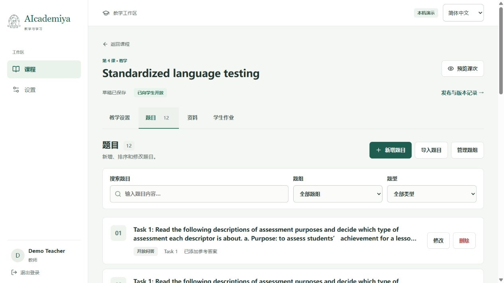
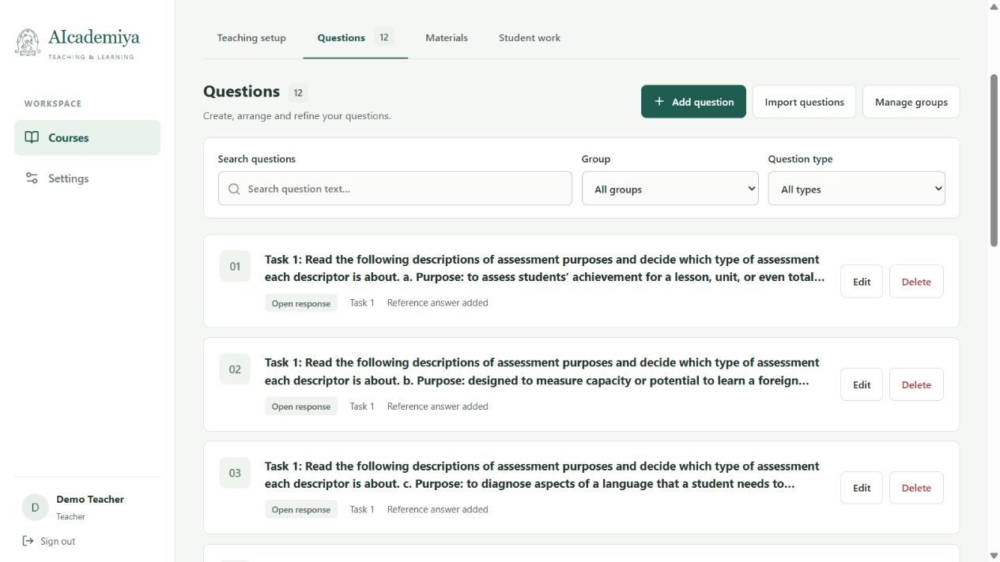
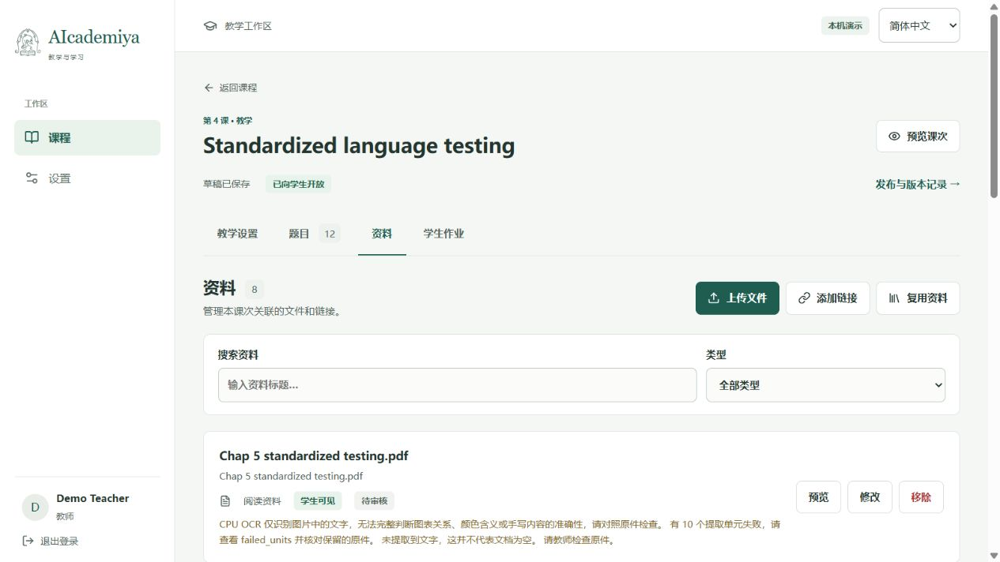
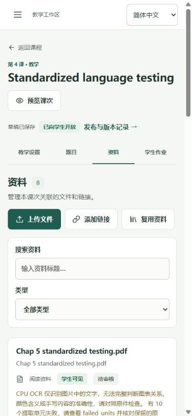

AIcademiya · Windows 本机 · 2026 年 10 月 16 日
中文展示、英文交付，共用一套功能
本轮完成 Vue 界面双语适配，覆盖登录、课程、题目、资料、学习工作区、人员管理、版本记录和设置。两个版本共用组件、业务逻辑和翻译资源，课程、题目、答案及 AI 教学语言保留原设置。当前本机服务默认显示中文。
分支与配置约定
| 用途 | 分支 | 默认界面语言 |
|---|---|---|
| 英文交付 | vue-java-cys | en |
| 中文演示 | vue-java-cys-chinese | zh-CN |
共用默认配置位于 app/config.defaults.json；两分支只保留其中 frontend.locale 的差异。个人配置和密钥位于已忽略的 app/config.json，显式填写的值优先。当前个人配置未固定界面语言。切换分支后重启服务并刷新页面即可跟随分支默认值，无需重复构建前端。
登录页和顶栏支持临时切换语言；刷新或重新登录后恢复部署默认值。后续功能先在英文分支开发，同时维护两份语言资源，再合并至中文分支并保留中文默认值。用 git diff vue-java-cys vue-java-cys-chinese 核对，预期仅上述配置一行不同。
实际验证结果
| 检查 | 结果 |
|---|---|
| 双语资源与交互测试 | 7 项通过：词条和参数一致、未知错误原文保留、日期与页面语言、组合提示、登录输入保留、题目编辑内容与标识保留。 |
| 相关前端回归 | 题目管理 5 项、题目导入 5 项、资料上传 5 项、文档状态处理 7 项通过；与双语测试合计 29 项。 |
| 后端配置 | 26 项通过，覆盖默认语言、显式覆盖和非法配置；另有现有 Starlette 弃用提示。 |
| 生产构建 | Vue 类型检查及 Vite 构建成功；最终构建于本机端口 18773 使用。 |
| 本机服务 | /api/health 返回 status=ok；/api/bootstrap 返回 default_locale=zh-CN。 |
| 桌面与手机布局 | 实际打开页面检查并留存 21 张截图。手机测试页面内容宽度与滚动宽度均为 375，桌面题目管理均为 1265，未见横向溢出。 |
| 原课程保护 | Session 4 的 12 道英文题目、3 个题组、8 份资料仍在；取消测试编辑后，版本预览显示“内容没有差异”。学生输入切换语言后仍保留，测试文本已清除，未发送 AI 请求。 |
前端通过本机 Vitest 运行指定测试文件，Node 使用 --no-experimental-webstorage；后端通过项目 tools/run_backend_tests.py backend/tests/test_deployment_config.py -q 运行，采用独立临时目录。构建命令为 npm run build -- --outDir dist-bilingual-build，产物验证后移入正式 dist。本轮未进行全量系统验收。
最终界面


中文题目管理：新增按钮和逐题修改、删除按钮均直接可见，原英文题干保留。


英文题目管理：共用相同列表、编辑器和数据。


资料处理提示已翻译，失败数量及原始诊断字段保留。核对并修复了组合提示的数字匹配和分号拆分问题。


手机布局：导航、上传操作和筛选器正常换行，无水平溢出。
其余页面与操作记录
| 页面 | 截图及核对内容 |
|---|---|
| 登录 | 英文 / 中文；切换语言保留已输入字段。 |
| 教学配置 | 中文设置；原学习目标、语气和教学语言不被界面翻译替换。 |
| 题目编辑 | 完整列表 / 编辑窗口 / 放弃修改确认 / 导入窗口。 |
| 英文手机页 | 英文资料管理。 |
| 学生学习 | 中文界面 / 英文界面与未发送输入；已有对话保留原语言，切换后输入仍在。 |
| 答案与历史 | 答案列表 / 手机答案页 / 学习历史。 |
| 账号与人员 | 设置页 / 课程人员页。 |
| 发布记录 | 版本列表 / 版本预览；只检查，未恢复或发布版本。 |


范围与清理
本轮只验证界面语言及直接影响范围，未重新调用 AI、执行 OCR 或重跑课程导入。既有资料处理失败仍如实显示。未收录的第三方错误保留原文；浏览器原生文件选择器和日期选择器随浏览器或操作系统语言显示。
临时开发服务已停止；端口 18773 的正式本机预览保留。临时脚本、测试数据、缓存、npm 日志及中间截图已移入 C:\Users\user\Desktop\智能体回收站\垃圾桶\zzm-bilingual-20261016，明细见 清理记录。替换下来的前端构建保存在同一目录下的四个 dist 子目录中。正式截图和检查报告留在项目内。本轮只处理本地分支。